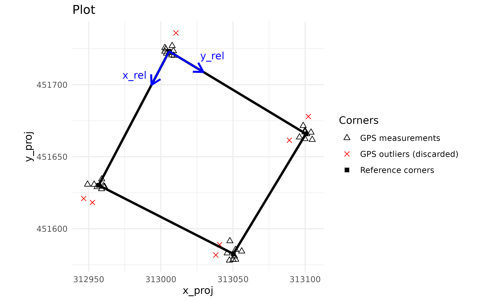
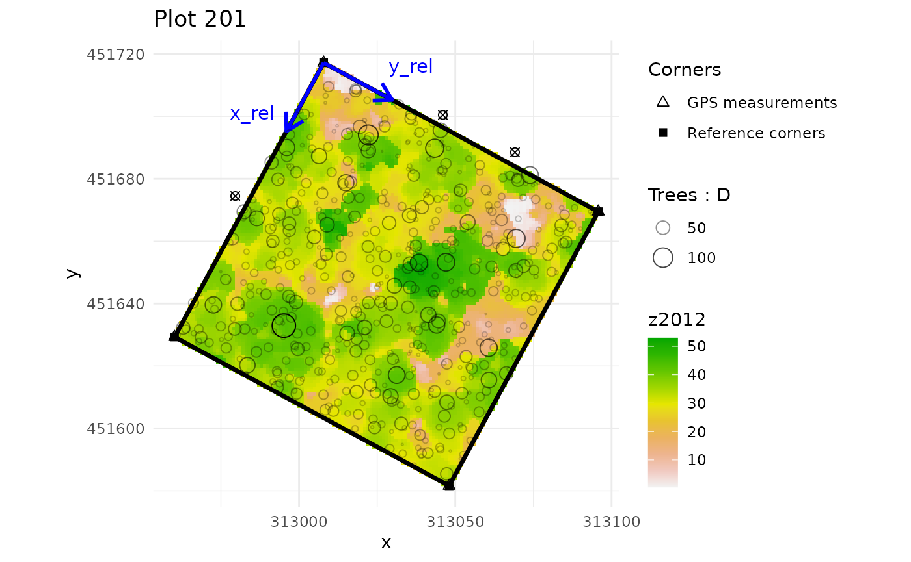
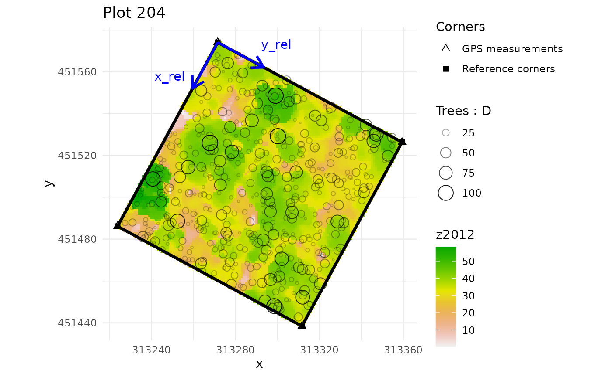
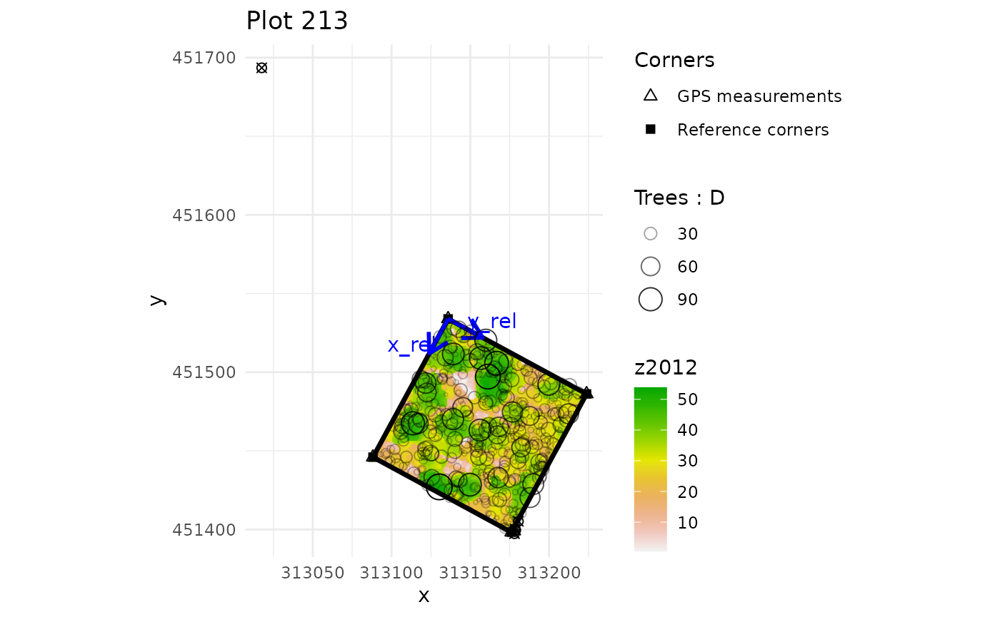
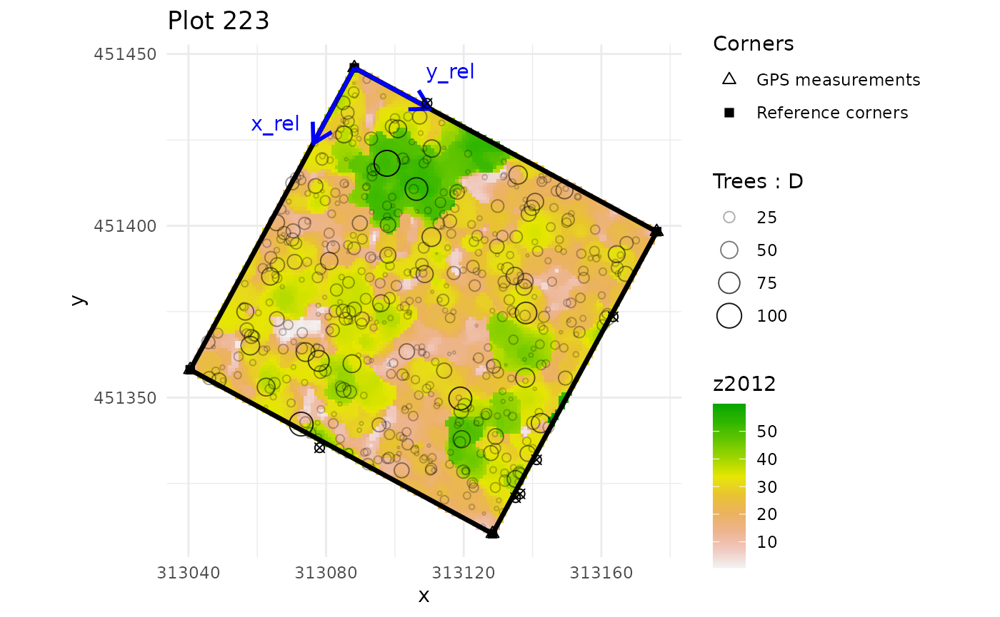
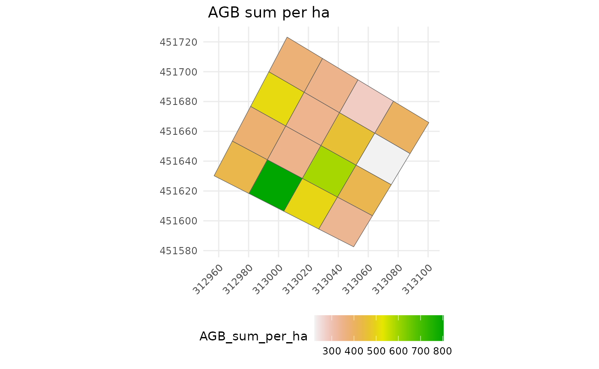

Spatialize trees and forest stand metrics with BIOMASS
Arthur Bailly
2025-11-14
Source:vignettes/Vignette_spatialized_trees_and_forest_stand_metrics.Rmd
Vignette_spatialized_trees_and_forest_stand_metrics.RmdOverview
BIOMASS enables users to manage their plots by:
calculating the projected/geographic coordinates of the plot’s corners and the trees from the relative coordinates (or local coordinates, i.e. those of the field)
visualising the plots
validating plot’s corners and tree coordinates with LiDAR data
dividing plots into subplots
summarising any tree metric at subplot level
Required data
Two data frames are required to perform the analysis. One for the corner of the plot(s), and one for the trees, which contains at least their coordinates.
- The corner data frame must contains at least:
- the names of the corresponding plots if there are several plots (below referred as to the ‘Plot’ column)
- the coordinates of the plot’s corners in the geographic or projected coordinate system (the GPS coordinates, below referred as to the ‘Xutm’ and ‘Yutm’ columns)
- the coordinates of the plot’s corners in the plot’s relative coordinate system (the local or field coordinates, below referred as to the ‘Xfield’ and ‘Yfield’ columns)
In this vignette, for educational purpose, we will not use only one but two datasets of corner coordinates, derived from permanent plots in the Nouragues forest (French Guiana):
- NouraguesPlot201 which contains simulated corner coordinates of one plot with repeated GPS measurements of each corner:
data("NouraguesPlot201")
kable(head(NouraguesPlot201), digits = 5, row.names = FALSE, caption = "Head of NouraguesPlot201")| Site | Plot | Xfield | Yfield | Xutm | Yutm | Long | Lat |
|---|---|---|---|---|---|---|---|
| Petit_Plateau | 201 | 0 | 0 | 313002.7 | 451723.1 | -52.68451 | 4.08504 |
| Petit_Plateau | 201 | 0 | 0 | 313007.5 | 451720.5 | -52.68446 | 4.08502 |
| Petit_Plateau | 201 | 0 | 0 | 313008.7 | 451723.4 | -52.68445 | 4.08504 |
| Petit_Plateau | 201 | 0 | 0 | 313002.8 | 451725.7 | -52.68451 | 4.08506 |
| Petit_Plateau | 201 | 0 | 0 | 313005.8 | 451722.1 | -52.68448 | 4.08503 |
| Petit_Plateau | 201 | 0 | 0 | 313010.5 | 451736.0 | -52.68444 | 4.08516 |
- NouraguesCoords which contains corner coordinates of four plots with a single GPS measurement of each corner, also derived from Nouragues forest:
data("NouraguesCoords")
kable(head(NouraguesCoords), digits = 5, row.names = FALSE, caption = "Head of NouraguesCoords")| Site | Plot | Xfield | Yfield | Xutm | Yutm | Long | Lat |
|---|---|---|---|---|---|---|---|
| Petit_Plateau | 201 | 0 | 0 | 313007.9 | 451717.2 | -52.68446 | 4.08499 |
| Petit_Plateau | 201 | 0 | 100 | 313095.8 | 451669.5 | -52.68367 | 4.08456 |
| Petit_Plateau | 201 | 100 | 0 | 312960.2 | 451629.3 | -52.68489 | 4.08419 |
| Petit_Plateau | 201 | 100 | 100 | 313048.0 | 451581.6 | -52.68410 | 4.08376 |
| Petit_Plateau | 204 | 0 | 300 | 313271.5 | 451574.0 | -52.68208 | 4.08370 |
| Petit_Plateau | 204 | 0 | 400 | 313359.4 | 451526.3 | -52.68129 | 4.08327 |
- The data frame including the tree coordinates, must
contain at least:
- the name of the plots if there are several plots
- the tree coordinates in the plot’s relative coordinate system (the local/field one)
- the desired information about trees, such as diameter, wood density, height, AGB, etc. (see BIOMASS vignette)
data("NouraguesTrees")
kable(head(NouraguesTrees), digits = 3, row.names = FALSE, caption = "Head of the table trees")| Site | Plot | Xfield | Yfield | Family | Genus | Species | D |
|---|---|---|---|---|---|---|---|
| Petit_Plateau | 201 | 0.0 | 31.5 | Burseraceae | Protium | surinamense | 11.0 |
| Petit_Plateau | 201 | 0.1 | 75.2 | Anacardiaceae | Tapirira | guianensis | 74.4 |
| Petit_Plateau | 201 | 0.2 | 27.6 | Lecythidaceae | Indet.Lecythidaceae | Indet. | 25.4 |
| Petit_Plateau | 201 | -4.0 | 67.5 | Euphorbiaceae | Conceveiba | guyanensis | 10.0 |
| Petit_Plateau | 201 | 0.3 | 39.9 | Burseraceae | Protium | altissimum | 18.9 |
| Petit_Plateau | 201 | -3.5 | 41.5 | Euphorbiaceae | Mabea | speciosa | 10.0 |
This dataset is also derived from the 2012 Nouragues forest dataset, but for educational purpose, some virtual trees with erroneous coordinates have been added in the data.
Checking plot’s coordinates
Two situations may occur:
The GPS coordinates of the plot corners are considered very accurate or enough measurements have been made to be confident in the accuracy of their average. In this case, the shape of the plot measured on the field will follow the GPS coordinates of the plot corners when projected into the projected/geographic coordinate system. See 3.1.1
Too few measurements of the GPS coordinates of plot corners have been collected and/or are not reliable. In this case, the shape of the plot measured on the field is considered to be accurate and the GPS corner coordinates will be recalculated to fit the shape and dimensions of the plot. See 3.1.2
In both cases, the use of the check_plot_coord()
function is recommended as a first step.
Checking the corners of the plot
The check_plot_coord() function handles both situations
using the trust_GPS_corners argument (= TRUE or FALSE).
You can give either geographical coordinates with the ‘longlat’ argument or another projected coordinates with the ‘proj_coord’ argument for the corner coordinates.
If we rely on the GPS coordinates of the corners:
When only 1 GPS measurement by corner has been recorded with a high degree of accuracy (by a geometer, for example), or if you already have averaged your measurements by yourself, you can supply these 4 GPS coordinates to the function.
When enough coordinates have been recorded for each corner (for more information, see the CEOS good practices protocol, section A.1.3.1 ), the coordinates will be averaged by corner, resulting in 4 reference coordinates. The function can also detect and remove GPS outliers using the ‘rm_outliers’ and ‘max_dist’ arguments.
check_plot_trust_GPS <- check_plot_coord(
corner_data = NouraguesPlot201,
longlat = c("Long", "Lat"), # or proj_coord = c("Xutm", "Yutm"),
rel_coord = c("Xfield", "Yfield"),
trust_GPS_corners = T,
draw_plot = TRUE,
max_dist = 10, rm_outliers = TRUE )
The two blue arrows represent the origin of the plot’s relative coordinate system.
If we rely on the shape of the plot measured on the field:
Let’s degrade the data to mimic the case where we only have 8 unreliable GPS coordinates.
degraded_corner_coord <- NouraguesPlot201[c(1:2,11:12,21:22,31:32),]
check_plot_trust_field <- check_plot_coord(
corner_data = degraded_corner_coord,
longlat = c("Long", "Lat"), # or proj_coord = c("Xutm", "Yutm"),
rel_coord = c("Xfield", "Yfield"),
trust_GPS_corners = FALSE,
draw_plot = TRUE, rm_outliers = FALSE)
#> Warning: Be carefull, you may have GNSS measurement outliers.
#> Removing them may improve the georeferencing of your plot (see rm_outliers and max_dist arguments).
We can see that the corners of the plot do not match the GPS measurements. In fact, they correspond to the best compromise between the shape and dimensions of the plot and the GPS measurements.
Recovering reference corner coordinates and the associated polygon(s)
Reference corner coordinates are returned by the function via the
$corner_coord output, with standardised column names for
future data processing.
kable(check_plot_trust_GPS$corner_coord, row.names = FALSE, caption = "Reference corner coordinates")| x_rel | y_rel | x_proj | y_proj |
|---|---|---|---|
| 0 | 0 | 313005.7 | 451723.2 |
| 100 | 0 | 312956.9 | 451630.2 |
| 100 | 100 | 313050.2 | 451582.6 |
| 0 | 100 | 313100.5 | 451665.9 |
The associated polygon is returned via the $polygon
output and can be saved into a shapefile as follows:
sf::st_write(check_plot_trust_GPS$polygon, "your_directory/plot201.shp")For full details, the $outlier_corners output returns
all the information about GPS outliers found by the function, the
$UTM_code output returns the UTM code calculated by the
function if geographic coordinates have been provided, and the
$sd_coord output returns the average standard deviation of
the GPS measurements for each corner on the X and Y axes.
Visualising and retrieving projected tree coordinates
Tree coordinates are usually measured in the plot’s relative
coordinate system. To project them in the projected system, you can
supply their relative coordinates using the tree_data and
tree_coords arguments.
plot201Trees <- NouraguesTrees[NouraguesTrees$Plot==201,]
check_plot_trust_GPS <- check_plot_coord(
corner_data = NouraguesPlot201,
longlat = c("Long", "Lat"), rel_coord = c("Xfield", "Yfield"),
trust_GPS_corners = TRUE,
tree_data = plot201Trees, tree_coords = c("Xfield","Yfield"))
#> Warning in check_corner_fct(.SD): Be careful, one or more trees are not inside the plot defined by rel_coord (see is_in_plot column of tree_data output)
The projected coordinates of the trees are added to the tree
data-frame and returned by the output $tree_data (columns
x_proj and y_proj).
plot201Trees[c("Xutm","Yutm")] <- check_plot_trust_GPS$tree_data[c("x_proj","y_proj")]
kable(head(check_plot_trust_GPS$tree_data[,-c(5,6,7)]), digits = 3, row.names = FALSE, caption = "Head of the $tree_data output")| Site | Plot | x_rel | y_rel | D | x_proj | y_proj | is_in_plot |
|---|---|---|---|---|---|---|---|
| Petit_Plateau | 201 | 0.0 | 31.5 | 11.0 | 313035.6 | 451705.1 | TRUE |
| Petit_Plateau | 201 | 0.1 | 75.2 | 74.4 | 313077.0 | 451680.0 | TRUE |
| Petit_Plateau | 201 | 0.2 | 27.6 | 25.4 | 313031.8 | 451707.2 | TRUE |
| Petit_Plateau | 201 | -4.0 | 67.5 | 10.0 | 313071.7 | 451688.0 | FALSE |
| Petit_Plateau | 201 | 0.3 | 39.9 | 18.9 | 313043.4 | 451700.1 | TRUE |
| Petit_Plateau | 201 | -3.5 | 41.5 | 10.0 | 313046.8 | 451702.5 | FALSE |
The output of the function also standardises the names of the
relative tree coordinates (to x_rel and y_rel)
and adds the is_in_plot column, indicating if a tree is in
the plot or not.
You can also access and modify the plot via the
$plot_design output which is a ggplot object. For example,
to change the plot title:
plot_to_change <- check_plot_trust_GPS$plot_design
plot_to_change <- plot_to_change + ggtitle("A custom title")
plot_to_change
If you provided longitude and latitude corner coordinates, you can retrieve the GPS coordinates of the trees in a longitude/latitude format using this code:
tree_GPS_coord <- as.data.frame( proj4::project(check_plot_trust_GPS$tree_data[c("x_proj","y_proj")], proj = check_plot_trust_GPS$UTM_code$UTM_code, inverse = TRUE) )Integrating LiDAR data
If you have LiDAR data in raster format (typically a CHM raster) that
you want to compare with a tree metric, this can be done with the
ref_raster and the prop_tree arguments.
# Load internal CHM raster
nouraguesRaster <- terra::rast(system.file("extdata", "NouraguesRaster.tif",package = "BIOMASS", mustWork = TRUE))
check_plot_trust_GPS <- check_plot_coord(
corner_data = NouraguesPlot201,
longlat = c("Long", "Lat"), rel_coord = c("Xfield", "Yfield"),
trust_GPS_corners = TRUE,
tree_data = plot201Trees, tree_coords = c("Xfield","Yfield"), prop_tree = "D", # here the treediameter
ref_raster = nouraguesRaster)
#> Warning in check_corner_fct(.SD): Be careful, one or more trees are not inside the plot defined by rel_coord (see is_in_plot column of tree_data output)Checking multiple plots at once
When corner_data and tree_data contain
several plots, you have to supply the column names containing the plots
IDs of the corners and the trees via the plot_ID and
tree_plot_ID arguments:
multiple_checks <- check_plot_coord(
corner_data = NouraguesCoords, # NouraguesCoords contains 4 plots
proj_coord = c("Xutm", "Yutm"), rel_coord = c("Xfield", "Yfield"),
trust_GPS_corners = TRUE,
plot_ID = "Plot",
tree_data = NouraguesTrees, tree_coords = c("Xfield","Yfield"),
prop_tree = "D", tree_plot_ID = "Plot",
ref_raster = nouraguesRaster, ask = FALSE)
#> Warning in check_corner_fct(.SD): In plot 201 : Be careful, one or more trees are not inside the plot defined by rel_coord (see is_in_plot column of tree_data output)
#> Warning in check_corner_fct(.SD): In plot 213 : Be careful, one or more trees are not inside the plot defined by rel_coord (see is_in_plot column of tree_data output)
#> Warning in check_corner_fct(.SD): In plot 223 : Be careful, one or more trees are not inside the plot defined by rel_coord (see is_in_plot column of tree_data output)
Be aware that by default, the function will ask you to type Enter between each plot (argument ‘ask = TRUE’).
Dividing plots
Dividing plots into several sub-plots is performed using the
divide_plot() function. This function takes the relative
coordinates of the 4 corners of the plot to divide it into a grid. Be
aware that the plot must be rectangular in the plot’s relative
coordinates system, i.e. have 4 right angles:
subplots <- divide_plot(
corner_data = check_plot_trust_GPS$corner_coord,
rel_coord = c("x_rel","y_rel"),
proj_coord = c("x_proj","y_proj"),
grid_size = 25 # or c(25,25)
)
kable(head(subplots$sub_corner_coord, 10), digits = 1, row.names = FALSE, caption = "Head of the divide_plot()$sub_corner_coord output.")| plot_ID | subplot_ID | x_rel | y_rel | x_proj | y_proj |
|---|---|---|---|---|---|
| subplot_0_0 | 0 | 0 | 313005.7 | 451723.2 | |
| subplot_0_0 | 25 | 0 | 312993.5 | 451699.9 | |
| subplot_0_0 | 25 | 25 | 313017.1 | 451686.2 | |
| subplot_0_0 | 0 | 25 | 313029.4 | 451708.9 | |
| subplot_1_0 | 25 | 0 | 312993.5 | 451699.9 | |
| subplot_1_0 | 50 | 0 | 312981.3 | 451676.7 | |
| subplot_1_0 | 50 | 25 | 313004.8 | 451663.6 | |
| subplot_1_0 | 25 | 25 | 313017.1 | 451686.2 | |
| subplot_2_0 | 50 | 0 | 312981.3 | 451676.7 | |
| subplot_2_0 | 75 | 0 | 312969.1 | 451653.5 |
If you want to stay in the plot’s relative coordinate system, just
set proj_coord = NULL.
The function also handles imperfect cuts with the origin
and grid_tol arguments. Here an example with a 40mx45m grid
and origin coordinates set at (10 ; 5).
subplots <- divide_plot(
corner_data = check_plot_trust_GPS$corner_coord,
rel_coord = c("x_rel","y_rel"), proj_coord = c("x_proj","y_proj"),
grid_size = c(40,45),
grid_tol = 0.3, # by default =0.1, ie, if more than 10% of the plot is not covered by the grid, it will returned an error
origin = c(10,5)
)
#> Warning in divide_plot_fct(.SD, grid_size, origin):
#> The x-dimension of the plot is not a multiple of the x-dimension of the grid size and origin offset
#> Warning in divide_plot_fct(.SD, grid_size, origin):
#> The y-dimension of the plot is not a multiple of the y-dimension of the grid size and origin offset
For the purpose of summarising and representing subplots (coming in
the next section), the function returns the coordinates of subplot
corners but can also assign to each tree its subplot
with the tree_data and tree_coords
arguments:
# Add AGB predictions (calculated in Vignette BIOMASS) to plot201Trees
AGB_data <- readRDS("saved_data/NouraguesTreesAGB.rds")
plot201Trees <- merge(plot201Trees , AGB_data[c("Xfield","Yfield","D","AGB")], sort=FALSE)
subplots <- divide_plot(
corner_data = check_plot_trust_GPS$corner_coord,
rel_coord = c("x_rel","y_rel"),
proj_coord = c("x_proj","y_proj"),
grid_size = 25, # or c(25,25)
tree_data = plot201Trees, tree_coords = c("Xfield","Yfield")
)
#> Warning in divide_plot(corner_data = check_plot_trust_GPS$corner_coord, : One
#> or more trees could not be assigned to a subplot (not in a subplot area)The function now returns a list containing:
sub_corner_coord: coordinates of subplot corners as previouslytree_data: the tree data-frame with the subplot_ID added in last column
kable(head(subplots$tree_data[,-c(2,3,4)]), digits = 1, row.names = FALSE, caption = "Head of the divide_plot()$tree_data returns")| x_rel | Plot | Family | Genus | Species | Xutm | Yutm | AGB | plot_ID | subplot_ID |
|---|---|---|---|---|---|---|---|---|---|
| 0.0 | 201 | Burseraceae | Protium | surinamense | 313035.6 | 451705.1 | 0.1 | subplot_0_1 | |
| 0.1 | 201 | Anacardiaceae | Tapirira | guianensis | 313077.0 | 451680.0 | 4.7 | subplot_0_3 | |
| 0.2 | 201 | Lecythidaceae | Indet.Lecythidaceae | Indet. | 313031.8 | 451707.2 | 0.6 | subplot_0_1 | |
| -4.0 | 201 | Euphorbiaceae | Conceveiba | guyanensis | 313071.7 | 451688.0 | 0.0 | NA | |
| 0.3 | 201 | Burseraceae | Protium | altissimum | 313043.4 | 451700.1 | 0.2 | subplot_0_1 | |
| -3.5 | 201 | Euphorbiaceae | Mabea | speciosa | 313046.8 | 451702.5 | 0.1 | NA |
Of course, the function can handle as many plots as you want, using
the corner_plot_ID and tree_plot_ID
arguments:
multiple_subplots <- divide_plot(
corner_data = NouraguesCoords,
rel_coord = c("Xfield","Yfield"), proj_coord = c("Xutm","Yutm"), corner_plot_ID = "Plot",
grid_size = 25,
tree_data = NouraguesTrees, tree_coords = c("Xfield","Yfield"), tree_plot_ID = "Plot"
)
#> Warning in divide_plot(corner_data = NouraguesCoords, rel_coord = c("Xfield", :
#> One or more trees could not be assigned to a subplot (not in a subplot area)Last but not least, the function can account for uncertainty in the
corner coordinates using the sd_coord and n
arguments. In this case, n simulations of corner
positioning will be drawn and returned via the $simu_coord
output list. The uncertainty (sd) on each corner position along the X-
and Y- axis will be equal to the value of sd_coord:
sd_coord_subplots <- divide_plot(
corner_data = check_plot_trust_GPS$corner_coord,
rel_coord = c("x_rel","y_rel"),
proj_coord = c("x_proj","y_proj"),
grid_size = 25, # or c(25,25)
tree_data = plot201Trees, tree_coords = c("Xfield","Yfield"),
sd_coord = check_plot_trust_GPS$sd_coord, n = 50
)
#> Warning in divide_plot(corner_data = check_plot_trust_GPS$corner_coord, : One
#> or more trees could not be assigned to a subplot (not in a subplot area)Summarising metrics at subplot level
Summarising tree metrics
Once you’ve applied the divide_plot() function with a
non-null tree_data argument, you can summarise any tree
metric at the subplot level with the subplot_summary()
function.
subplot_metric <- subplot_summary(
subplots = subplots,
value = "AGB", # AGB was added before applying divide_plot()
per_ha = TRUE)
#> [[1]]
By default, the function sums the metric per subplot
and divides the result by the area of each subplot (to obtain a summary
per hectare), but you can request any valid function
using fun argument and choose between a raw or a per
hectare summary using per_ha argument.
subplot_metric <- subplot_summary(
subplots = subplots,
value = "AGB",
fun = quantile, probs = 0.5, # yes, it is the median
per_ha = FALSE)
#> [[1]]
The output of the function is a list containing:
$tree_summary: a summary of the metric per subplot$polygon: a simple feature collection of the summarised subplot’s polygons$plot_design: a ggplot object that can easily be modified
The returned polygons can be saved into a shapefile like this:
# Set the CRS of the polygons
subplot_polygons <- sf::st_set_crs(
subplot_metric$polygon ,
value = "EPSG:2972") # EPSG:2972 (corresponding to UTM Zone 22N) is the UTM coordinate system of Nouragues
# Save the polygons in a shapefile
sf::st_write(subplot_polygons, "your_directory/subplots_201.shp")And of course, the function can handle as many plots as provided in divide_plot():
multiple_subplot_metric <- subplot_summary(
subplots = multiple_subplots, draw_plot = FALSE,
value = "D", fun = mean, per_ha = FALSE)Summarising the AGBD and its uncertainties
If you have obtained the AGB estimates and their uncertainty
using the ‘AGBmonteCarlo()’ function (see the Estimating
stand biomass vignette, you can provide the output matrix of this
function using the AGB_simu argument.
The function also handles uncertainty in corner coordinates if the
subplots argument provided has been created using the
sd_coord argument (optional):
subplot_AGBD <- subplot_summary(
subplots = sd_coord_subplots,
AGB_simu = error_prop$AGB_simu # error_prop has been created in the previous vignette
)
#> As 'AGB_simu' contains 200 simulations, and 'subplots$simu_coord' contains 50 simulations, 150 simulations will be resampled in 'subplots'.
#> [[1]]
The simulated AGBs are therefore summarised in AGBD
(i.e. AGB per hectare), and the function returns an additional output
containing all the simulations performed:
$long_AGB_simu.
Summarising LiDAR metrics
subplot_summary() can also summarise the metric
contained in a raster (typically a CHM raster obtained from
LiDAR data) by providing the ref_raster and the
raster_fun arguments:
raster_summary <- subplot_summary(
subplots = subplots,
ref_raster = nouraguesRaster, raster_fun = median)
#> Extracting raster metric...Extracting raster metric done.[[1]]
All at once
Let us consider the uncertainty in the coordinates of the plot corners and summarise the following information:
- the standard deviation of diameter
- the AGB and its uncertainty
- the mean raster values
subplot_metric <- subplot_summary(
subplots = sd_coord_subplots,
value = "D", fun = sd, per_ha = TRUE,
AGB_simu = error_prop$AGB_simu,
ref_raster = nouraguesRaster # by default, the associated function is the mean function
)
#> As 'AGB_simu' contains 200 simulations, and 'subplots$simu_coord' contains 50 simulations, 150 simulations will be resampled in 'subplots'.
#> Extracting raster metric...Extracting raster metric done.[[1]]
#>
#> [[2]]
#>
#> [[3]]
Customizing the ggplot
Here are some examples to custom the ggplot of the
subplot_summary() function:
subplot_metric <- subplot_summary(subplots = subplots,
value = "AGB")
#> [[1]]
custom_plot <- subplot_metric$plot_design
# Change the title and legend:
custom_plot +
labs(title = "Nouragues plot" , fill="Sum of AGB per hectare")
# Display trees with diameter as size and transparency (and a smaller legend on the right):
custom_plot +
geom_point(data=plot201Trees, mapping = aes(x = Xutm, y = Yutm, size = D, alpha= D), shape=1,) +
labs(fill = "Sum of AGB per hectare") +
guides(alpha = guide_legend(title = "Diameter (cm)"),
size = guide_legend(title = "Diameter (cm)")) +
theme(legend.position = "right", legend.key.size = unit(0.5, 'cm'))